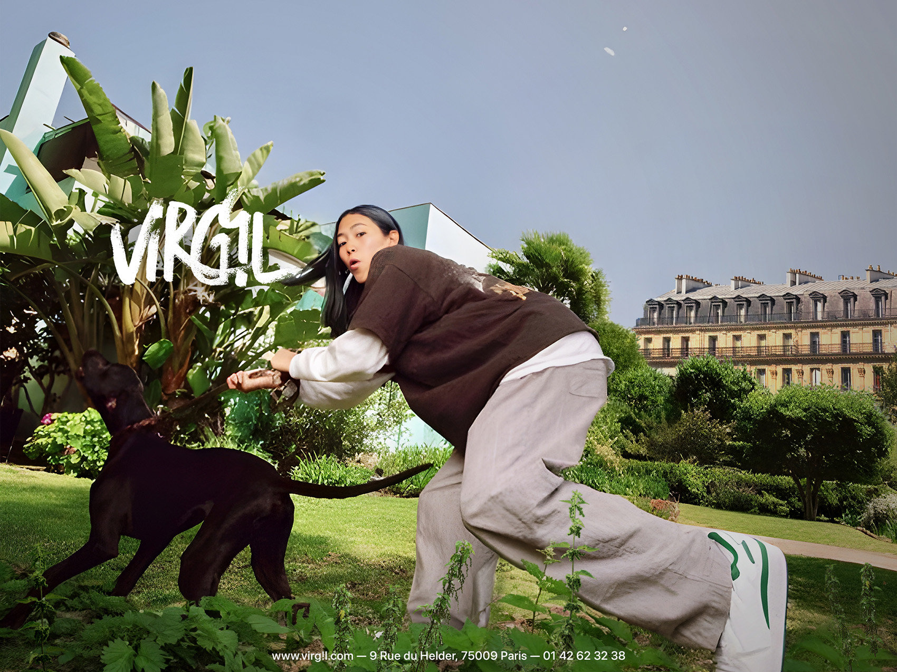
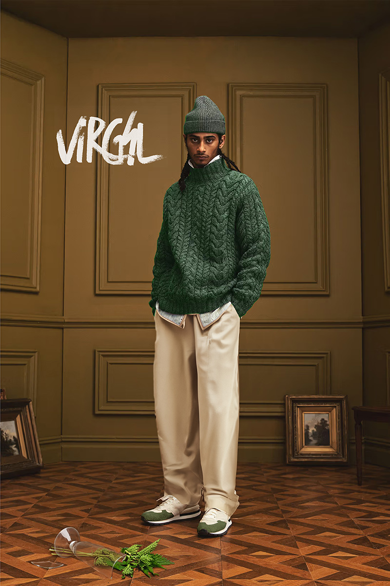
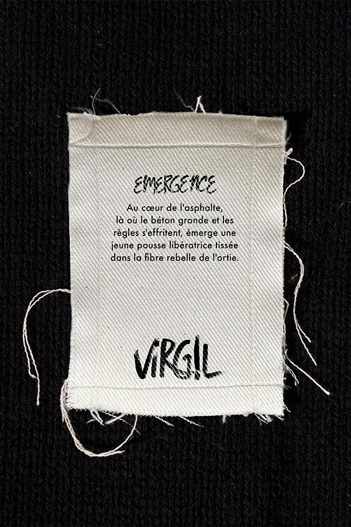

La collection
de lancement
ÉMERGENCE n’est pas seulement une collection de vêtements, mais une déclaration où l’intervention libératrice de l’ortie appel à briser les barrières érigées par la société. Comme une jeune pousse qui perce le sol, VIRG!L émerge, porteur d’une vision où la nature et la ville fusionnent, où la diversité s’épanouit, et où chaque fils tissés racontent l’histoire d’une révolution en marche.
COLLECTIONS SUIVANTES
[PARVENU] s’inscrit dans un récit subversif. Les fibres d’ortie, ancrées dans la rébellion, se mêlent à des coupes audacieuses, dépeignant une ascension sociale teintée d’irrévérence. Choisir PARVENU avec VIRG!L, c’est arborer l’élégance insolente d’un parvenu, transcendé par la fusion rebelle de la nature et de la sophistication urbaine.
[MAUVAIS GARÇON] s’insinue comme le dernier acte d’une trilogie rebelle. Les fibres d’ortie, jadis symboles de l’émergence, se transforment en étoffe provocante, incarnant la désinvolture assumée d’un statut contesté. Dans ce chapitre final, VIRG!L hisse haut les couleurs d’une rébellion vestimentaire, défiant la haute société désormais consternée, révélant que dans chaque «Mauvais Garçon» se tapit l’essence indomptable de la nature, prête à déchirer les normes établies.